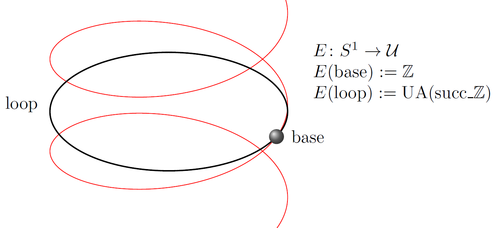

HoTTEST
Homotopy Type Theory Electronic Seminar Talks (HoTTEST) is a series of research talks by leading experts in Homotopy Type Theory. The seminar is open to all, although familiarity with Homotopy Type Theory will be assumed. To attend a talk, please follow the instructions below.
Essential Information
- Time: Alternate Thursdays at 11:30 AM Eastern (60-minute talk + 30-minute discussion).
- Mailing list: HoTT Electronic Seminar Talks (for updates).
- Google calendar: Seminar Calendar.
- YouTube channel: HoTTEST.
- Organizers: Carlo Angiuli, Dan Christensen, Chris Kapulkin, and Emily Riehl.
- Website by: Zack Dooley
How to Attend?
We are using Zoom for the talks. Please install the software and make at least one test call before joining a talk. To join follow the link:
| Date | Speaker | Talk Information |
|---|---|---|
| Apr 17 | Mitchell Riley |
Tiny Types and Cubical Type Theory I will present an extension of Martin-Löf Type Theory that contains a tiny object; a type for which there is an "amazing" right adjoint to the formation of function types as well as the expected left adjoint. A primary aim of the theory is to be simple enough to be used both by hand and in a (hypothetical) proof assistant. I will sketch a normalisation algorithm and discuss a few potential applications, in particular, to implementations of Cubical Type Theory. |
| Mar 6 | Jonathan Weinberger |
Directed univalence and the Yoneda embedding for synthetic ∞-categories In this talk, I'll present recent results in synthetic ∞-category theory in an extension of homotopy type theory. An ∞-category is analogous to a 1-category, but with composition defined only up to homotopy. To reason about them in HoTT, Riehl and Shulman proposed simplicial HoTT, an extension by a directed interval, generating the shapes that model arrows and their composition. To account for fundamental constructions like the opposite category or the maximal subgroupoid, we add further type formers as modalities using Gratzer-Kavvos-Nuyts-Birkedal's framework of multimodal dependent type theory (MTT). I'll present the construction of the universe 𝒮 of small ∞-groupoids in that setting which we can show to be an ∞-category satisfying directed univalence. As an application, we can define various ∞-categories of interest in higher algebra such as ∞-monoids and ∞-groups. Furthermore, I'll show the construction of the fully functorial Yoneda embedding w.r.t. 𝒮 as well as the Yoneda lemma (which is hard to establish in set-theoretic foundations). If time permits, I will outline further developments in synthetic ∞-presheaf theory, namely first steps in the theory of Kan extensions, including a proof of Quillen's Theorem A and the properness of cocartesian fibrations. The material is joint work with Daniel Gratzer und Ulrik Buchholtz (https://arxiv.org/abs/2407.09146, https://arxiv.org/abs/2501.13229). |
| Feb 20 | Martín Hötzel Escardó |
Injective Types In previous work, we established results about injective types in HoTT/UF, including characterizations, closure properties, and examples. In recent current work, in collaboration with Tom de Jong, we have developed more examples and counter-examples, as well as a better understanding of the landscape. In this talk I will present these old and new ideas. |
| Feb 6 | Mario Carneiro |
Lean4Lean: Towards a Verified Typechecker for Lean, in Lean This talk will present Lean4Lean, a project to construct a verified checker for the Lean theorem prover in the style of MetaCoq. It consists of a new "external verifier" for Lean, written in Lean. It is the first complete verifier for Lean 4 other than the reference implementation in C++ used by Lean itself, and the new verifier is competitive with the original, running between 20% and 50% slower and usable to verify all of Lean's mathlib library, forming an additional step in Lean's aim to self-host the full elaborator and compiler. The second part of the project concerns the type theory itself, and establishing its properties (in spite of several known negative results about the behavior of the type system), with the ultimate goal of being able to show that the verifier is correct to a specification of the type theory, and that the type theory is consistent relative to ZFC with countably many inaccessible cardinals. This work is still ongoing but we plan to use this project to help justify any future changes to the kernel and type theory and ensure unsoundness does not sneak in through either the abstract theory or implementation bugs. |
| Date | Speaker | Talk Information |
|---|---|---|
| Sept 26 | Reid Barton |
Directed aspects of condensed type theory Condensed mathematics is a recently-introduced setting for applying methods of higher category theory to objects of topological nature. The category Cond of condensed sets can be viewed as an approximation of the category of topological spaces by a topos. We identify two classes of maps of Cond, that we call "etale" and "proper", that correspond to local homeomorphisms and to proper maps of topological spaces respectively, and we propose type-theoretic axioms concerning these that express the sense in which Cond is a "category of spaces", and not only a "category of sets". The focus of this talk will be on the "directed path types" of a condensed set (or groupoid), which correspond to the specialization order on the points of a topological space, and are defined using the Sierpinski condensed set as "directed interval". Etale and proper maps have unique lifting properties with respect to the two endpoints of this interval, and so are analogous to left and right fibrations of simplicial spaces. The aim of the talk is to explain this (imperfect) analogy from both an external and an internal perspective, to try to shed light on possible relationships with recent and current work in simplicial and directed type theories. This talk is based on joint work with Johan Commelin. |
| Dec 5 | Paige North |
Coinductive control of inductive data types In classical programming language theory, characterizing data types as initial algebras of an endofunctor that represents a specification of the data types is an important tool. In this work, we observe that the category of algebras of such an endofunctor is often enriched in its category of coalgebras. This enrichment carries strictly more information than the traditional, unenriched category. For example, when considering the endofunctor whose initial algebra is the natural numbers, we find that the enrichment encodes a notion of `partial' homomorphism, while the unenriched category encodes only `total' homomorphisms. We can also leverage this extra information to generalize the notion of initial algebras, following the theory of weighted limits. This is joint work with Maximilien Péroux and Lukas Mulder. |
| Nov 21 | Niels van der Weide |
The internal languages of univalent categories Internal language theorems are fundamental in categorical logic, since they express an equivalence between syntax and semantics. One of such theorems was proven by Clairambault and Dybjer, who corrected the result originally by Seely. More specifically, they constructed a biequivalence between the bicategory of locally Cartesian closed categories and the bicategory of democratic categories with families with extensional identity types, ∑-types, and ∏-types. This theorem expresses that, up to adjoint equivalence, the internal language of locally Cartesian closed categories is extensional Martin-Löf type theory with dependent sums and products. In this talk, we prove the theorem by Clairambault and Dybjer for univalent categories, and we extend their biequivalence to various classes of toposes, among which are ∏-pretoposes and elementary toposes. Univalent categories give an interesting framework for studying internal language theorems of dependent type theory. This is because of the fact that univalent categories are identified up to adjoint equivalence, and that internal language theorems give us biequivalence for various classes of categories and theories. In addition, we shall see that univalence gives us several ways to simplify the necessary constructions and proofs, because it allows us to transfer properties and structure along equivalences for free. The results in this paper have been formalized using the proof assistant Coq and the UniMath library. The material in this talk is based on the preprint https://arxiv.org/abs/2411.06636. |
| Nov 7 | Tashi Walde |
An axiomatization of synthetic category theory We propose an axiomatization of synthetic categories that allows to develop most of (infinity-)category theory from first principles, without relying on explicit set-theoretic models. We expect that such a synthetic theory can make it easier to practice (infinity-)category theory for non-experts and teach it to beginners; moreover, it lends itself to formalization in proof assistants. This talk is based on an ongoing long-term project with D.-C. Cisinski, B. Cnossen and K. Nguyen. |
| Oct 24 | Max Zeuner |
Univalent foundations of constructive algebraic geometry HoTT/UF aims not only to be framework for synthetic homotopy theory, but also a suitable foundation for "set-level" constructive mathematics. In this talk we want to support this claim by discussing how the basic theory of schemes, the fundamental notion of modern algebraic geometry, can be set up in HoTT/UF. The classical literature contains two different approaches to schemes: schemes as locally ringed spaces and schemes as functors. We will show how both of these can be made constructive and predicative and discuss what kind of issues arise when defining qcqs-schemes using either approach in HoTT/UF. Finally, we give a sketch of a univalent proof that the two constructive definitions coincide. |
| Oct 10 | Floris van Doorn |
Formalizing a proof of Carleson's theorem A fundamental question in Fourier analysis is the Fourier inversion theorem, which states that for nice functions, applying the Fourier transform twice gives the original function back up to reversal. This is true for continuously differentiable functions, but the situation is a lot more subtle for e.g. continuous functions. In this case the Fourier transform might not be integrable, and one has to consider improper integrals. Moreover, this improper integral need not converge at every point, but in 1966 Lennart Carleson proved that it does converge at almost all points for functions on the real line. This result follows from the boundedness of the Carleson operator. Carleson's proof is famously hard to read, and there are no known easy proofs of this theorem. We have proven a generalization of the boundedness of the Carleson's operator in the setting of doubling metric measure spaces, and we are currently working on formalizing the entire proof in the proof assistant Lean, based on a detailed blueprint we wrote first. This advanced formalization is possible because of Lean's large mathematical library Mathlib. In this talk I will give an overview of the project including its practical aspects, as well as highlighting some other exciting projects around Mathlib. No background in Fourier analysis is assumed. This is joint work with Lars Becker, Leo Diedering, Asgar Jamneshan, Rajula Srivastava, Jeremy Tan, Christoph Thiele and others. |
| Date | Speaker | Talk Information |
|---|---|---|
| May 2 | Andreas Nuyts |
Higher Pro-arrows: Towards a Model for Naturality Pretype Theory In systems with internal parametricity, we get propagation and preservation of relations through/by all functions for free. In HoTT, we get preservation of equivalences by all functions for free. In directed type theory, we get preservation of morphisms by all (covariant) functions for free. None of these three properties by itself is satisfactory: if we weaken equivalences or morphisms to relations, we lose their computational behaviour. If we want to rely on preservation of non-invertible morphisms, we need our functions to be covariant. And finally, simply not every morphism/relation is an equivalence. We set out to develop a type system that has all three preservation properties in an interactive manner, so that we can preserve isomorphisms when available, morphisms when covariant, and relations as a last resort. Such a system should provide us with functoriality (fmap), parametricity and naturality proofs for free. I call such a system "Naturality Type Theory". In this first step, I consider Naturality *Pre*type Theory: I defer all considerations of fibrancy to intuition and future work. In particular, I do not yet worry too much about the specifics of composition of and transport along morphisms. By instantiating parametrized systems such as Multimod(e/al) Type Theory (MTT) and the Modal Transpension System (MTraS), we can moreover separate concerns and only worry about the presheaf model at every mode, and the modalities that we can model as adjunctions between these presheaf models, leaving syntactic matters to research on MTT and MTraS. The presheaf models are designed to accommodate yet-to-be-defined higher pro-arrow equipments, and can be invented in three ways: (1) as a higher-dimensional version of pro-arrow equipments, (2) as a heterogenization of Tamsamani & Simpson's model of higher category theory, and (3) as a directification of Degrees of Relatedness. In this talk, after motivating the subject, I intend to introduce the main ideas and then spiral towards the technical details, starting from the three existing settings/structures/models mentioned above. |
| Apr 11 | Dan Christensen |
Sphere bundles and their invariants Sphere bundles arise naturally in many contexts, often as the unit sphere bundles associated to vector bundles. For example, a manifold has a sphere bundle associated to its tangent bundle. In order to distinguish these bundles and to learn more about the manifolds, it's important to understand invariants of sphere bundles, such as the Euler class and the Thom class which live in cohomology groups. This talk will begin with a review of bundles and oriented bundles, and will then take a detour to discuss central types. We'll use central types to produce new models of Eilenberg-Mac Lane spaces. One of the themes of the talk will be that by using an appropriate model of an Eilenberg-Mac Lane space, we can give concrete descriptions of its H-space structure (which represents addition in cohomology) and of the cup product operation. Moreover, we'll show that by using these models, we can give very simple descriptions of the Euler class and Thom class of an oriented sphere bundle, and can prove theorems about them, such as the relationship between the two and the Whitney sum formula. I will also mention our work constructing the tangent sphere bundles of spheres and on the hairy ball theorem, which shows that the tangent sphere bundle of the n-sphere has a section if and only if n is odd. This is joint work with Ulrik Buchholtz, David Jaz Myers and Egbert Rijke, and most of our results have been formalized using the Coq-HoTT library. |
| Mar 28 | Evan Cavallo |
Why some cubical models don't present spaces Historically, constructive cubical interpretations of HoTT interpret types as families equipped with an "open box-filling" operation, which ensures that identities in types can be interpreted as maps from an interval. This choice of structure was inspired by Kan's early work on cubical sets. However, cubical type theory inteprets in forms of cubical sets not considered by Kan, indeed rarely considered in the homotopy-theoretical literature. In these settings, it is a priori unclear whether a box-filling operation is really what should qualify a cubical set as a "space" in a standard sense. I'll present arguments that for many forms of cubical set used in interpretations of HoTT, this is in fact not the case. Concretely, we show that in these settings, Quillen model structures based on box-filling fibrations are not Quillen equivalent to model categories (such as the Kan-Quillen model structure on simplicial sets) which do present spaces. This is joint work with Christian Sattler. |
| Mar 14 | Greta Coraglia |
On the fibration of algebras We study fibrations arising from indexed categories of the following form: for a parametric endofunctor, consider its category of algebras (or Kleisli/Eilenberg--Moore in the case of monads), then one can construct the (op)fibration having for base category that of parameters, so that each fiber is precisely the category of algebras on a given fixed parameter. Examples of such constructions arise in disparate areas of mathematics, and are unified by the intuition that the resulting total category is a form of "semidirect product" of the category of parameters, which acts on the category the parametric endofunctor is defined on. We discuss some properties and applications with respect to the categorical semantics of (co)induction. This is part of a joint and ongoing work with D. Ahman, D. Castelnovo, F. Loregian, N. Martins-Ferreira, Ü. Reimaa. |
| Feb 29 | Rafaël Bocquet |
Strict Rezk completions of models of HoTT and homotopy canonicity In this talk I'll present the main ideas of my new proof of homotopy canonicity for HoTT (see arXiv:2311.05849). Constructive models of HoTT, such as cubical set models, provide a computational interpretation of the univalence axiom. Homotopy canonicity, originally conjectured by Voevodsky, implies that the computational content of univalence can already be observed in the syntax. Canonicity results are usually proven using a sconing construction, gluing together the syntax and a semantic model. For homotopy canonicity, the semantic model should be a model of HoTT, say cubical sets. To carry out the sconing construction, the components of the base model should also be cubical sets with the correct higher dimensional structure. However the components of the syntax are only sets, which can be seen as discrete cubical sets, with the "wrong" higher dimensional structure. This can be solved by constructing the "strict Rezk completion" of the syntax, which is an equivalent model with the correct higher dimensional structure. Strict Rezk completions can be constructed in cartesian cubical sets. |
| Feb 15 | Émile Oleon |
Delooping cyclic groups with lens spaces in homotopy type theory In the setting of homotopy type theory, each type can be interpreted as a space. Moreover, given an element of a type, i.e. a point in the corresponding space, one can define another type which encodes the space of loops based at this point. In particular, when the type we started with is a groupoid, this loop space is always a group. Conversely, to every group we can associate a type (more precisely, a pointed connected groupoid) whose loop space is this group: this operation is called *delooping*. The generic procedures for constructing such deloopings of groups (based on torsors, or on descriptions of Eilenberg-MacLane spaces as higher inductive types) are unfortunately equipped with elimination principles which do not directly allow eliminating to arbitrary types, and are thus difficult to work with in practice. Here, we construct deloopings of the cyclic groups Z_m which are *cellular*, and thus do not suffer from this shortcoming. In order to do so, we provide type-theoretic implementations of *lens spaces*, which constitute an important family of spaces in algebraic topology. In some sense, this work generalizes the construction of real projective spaces by Buchholtz and Rijke in their LICS'17 paper, which handles the case m = 2, although the general setting requires more involved tools. Finally, we use this construction to also provide cellular descriptions of dihedral groups, and explain how we can hope to use those to compute the cohomology and higher actions of such groups. |
| Feb 1 | Urs Schreiber |
Topological Quantum Programming via Linear Homotopy Types It is interesting to observe that a use-case of what deserves to be called genuine “homotopical computation” is secretly known: We showed in arXiv:2303.02382 (in print at Comm. Math. Phys., see ncatlab.org/schreiber/show/TQC+in+HoTT) that the specification of the logic gates envisioned in “topological quantum computation on anyons”, while intricate in traditional language, have a slick expression in HoTT, simply as transport of certain truncated dependent function types into Eilenberg-MacLane types. The mathematical theorems behind this are a remarkable result on conformal quantum field theory by Feigin, Schechtmann & Varchenko (1994) combined with our novel algebro-topological construction, lending itself to formalization in HoTT, of Gauss-Manin connections on fibrations of twisted cohomology groups. Generally, the relation between HoTT and quantum computation is closer than might be suspected: Adding rules meant to enforce interpretation of HoTT into infinity-topoi of parameterized module spectra (such as Riley’s *Linear HoTT*) naturally provides for an expressive certification-language for quantum programming with “dynamic lifting” of quantum measurement results (arXiv:2310.15735, ncatlab.org/schreiber/show/Quantum+Monadology), previously elusive but arguably necessary for any serious quantum computation. This is joint work with David J. Myers and Hisham Sati. |
| Date | Speaker | Talk Information |
|---|---|---|
| Dec 14 | David Jaz Myers |
The Tangent Bundles of Spheres jww Ulrik Buchholtz, Dan Christensen, and Egbert Rijke In this talk, we'll construct the tangent sphere bundles on the spheres using an inductive construction, and we'll use this construction to prove the Hairy Ball Theorem. We'll then compute the Euler class of the tangent sphere bundles with an explicit construction. Generalizing from this case, we'll define a preliminary notion of "homotopy manifold" and use an abstract lemma about pushout products to define the product of homotopy manifold structures. This will give us tangent bundles on products of spheres as well. All of this will take place in ordinary book HoTT, and a good deal of it has already been formalized in Coq. |
| Nov 30 | Ingo Blechschmidt |
Towards multiversal modal operators for homotopy type theory Where do some of our most cherished inductive definitions come from? Which functions are we excluding when we form the type of all functions between two types? Does every field have an algebraic closure? Inspired by the modal approach to the set-theoretic multiverse of Joel David Hamkins, Victoria Gitman and their collaborators, we aim to introduce the modal operators "everywhere" and "somewhere" to homotopy type theory, proposing a multiversal perspective on these motivating questions. Unlike the set-theoretic role model, we focus less on exploring the range of foundational possibility and more on concrete applications in constructive mathematics, with the goal of porting results of classical mathematics to homotopy type theory. It will turn out that every field has an algebraic closure somewhere; that a transitive relation is well-founded iff nowhere there is an infinite descending chain; and that somewhere, the law of excluded middle holds. This is ongoing joint work with Alexander Oldenziel and connected to the recent advances with type-theoretic presheaf models and sheaf models. |
| Nov 16 | David Wärn |
Path spaces of pushouts via a zigzag construction Working in informal HoTT, we introduce the zigzag construction to describe path spaces of arbitrary pushouts as sequential colimits of pushouts. The construction is no more complicated than the James construction but much more general. By analysing this construction, we obtain direct proofs of the Blakers–Massey theorem, various results in combinatorial group theory, and the fact that any pushout of 0-types is a 1-type. The lattermost resolves an open problem in HoTT mentioned already in the HoTT book. While this talk will assume some familiarity with HoTT, the construction may be of interest to topologists more generally. |
| Nov 2 | Elisabeth Stenholm |
Non-wellfounded sets in Homotopy Type Theory In 1978 Aczel gave a model of constructive set theory (CZF), which includes theaxiom of foundation, in Martin-Löf type theory (MLTT) [1]. Then, in 1989, Lindström gave a different model, also in MLTT, of constructive set theory, butwith foundation replaced by Aczel's anti-foundation axiom (AFA) [2]. Both of these models were setoid based. Starting from Aczel's 1978 model of well-founded sets, Gylterud defined a subtype of the type Aczel used. This subtype is in fact the initial algebra of the (restricted) powerset functor, and thus also forms a model of constructive set theory, but one where equality is interpreted as the identity type [3]. In this work, we dualise the construction of Gylterud, to obtain a model of non-wellfounded sets, where equality is interpreted as the identity type, as opposed to Lindström's model. The expectation was that the dualised construction would be the terminal coalgebra of the powerset functor, in which case it would be a model of CZF⁻ together with AFA. It turns out, however, that it is not the terminal coalgebra of the powerset functor. But all is not lost, for it is a fixed point of the functor, and in addition, it is terminal with respect to embeddings. This gives us instead a model of CZF⁻ together with Scott's anti-foundation axiom. [1]: P. Aczel, “The Type Theoretic Interpretation of Constructive Set Theory,” in Studies in Logic and the Foundations of Mathematics, vol. 96, A. Macintyre, L. Pacholski, and J. Paris, Eds., in Logic Colloquium ’77, vol. 96. , Elsevier,1978, pp. 55–66. doi: 10.1016/S0049-237X(08)71989-X. [2]: I. Lindström, “A Construction of Non-Well-Founded Sets within Martin-Löf’s Type Theory,” The Journal of Symbolic Logic, vol. 54, no. 1, pp. 57–64, 1989,doi: 10.2307/2275015. [3]: H. R. Gylterud, “From Multisets to Sets in Homotopy Type Theory,” The Journal of Symbolic Logic, vol. 83, no. 3, pp. 1132–1146, Sep. 2018, doi:10.1017/jsl.2017.84. |
| Oct 19 | Felix Cherubini |
A Foundation for Synthetic Algebraic Geometry In this [1] joint work with Thierry Coquand and Matthias Hutzler, we develop a foundation for a synthetic treatment of algebraic geometry, which is much in the same spirit as synthetic differential geometry. The language we use for the synthetic reasoning is homotopy type theory together with a postulated ring and three axioms. Two of the axioms were already present in previous work of Blechschmidt and a weaker variant already in work of Kock. Our third axiom, which we call "Zariski-local choice", postulates a local-triviality with respect to a topology called the Zariski-topology. Using this axiom, it is possible to compute cohomology groups which we define using internal Eilenbeg-MacLane spaces. In the talk, I will explain this central new feature of our setup and conclude with an overview of recent results in synthetic algebraic geometry. |
| Oct 5 | Nikolai Kudasov |
Rzk proof assistant and simplicial HoTT formalization Reasoning in higher category theory can be quite difficult and synthetic theories help internalise common arguments to simplify proofs. Synthetic theories also often admit automation in a form of proof assistants, which further help verify results with the help of the computer. Rzk is an experimental proof assistant for synthetic ∞-categories, based on the type theory with shapes by Emily Riehl and Michael Shulman [1], which in turn is an extension of homotopy type theory with a tope logic layer and extension types. In a joint work with Emily Riehl and Jonathan Weinberger, we formalize the ∞-categorical Yoneda lemma in Rzk. Thanks to synthetic theory, many constructions in the formalization are automatically natural or functorial. In this talk, I will present the basics of theorem proving in Rzk, and outline the main result of our formalization project. Additionally, I will talk briefly about the implementation of Rzk itself, plans for its development, and some ideas for implementing proof assistants based on dependent types in general. [1]: Emily Riehl & Michael Shulman. A type theory for synthetic ∞-categories. Higher Structures 1(1), 147-224. 2017. https://arxiv.org/abs/1705.07442 |
| Date | Speaker | Talk Information |
|---|---|---|
| Apr 20 | Maria Emilia Maietti |
A comparison between the Minimalist Foundation and Homotopy Type Theory In this talk, I will outline the main common aspects and differences between the two-level Minimalist Foundation (for short MF) in [4] according to [3] and Homotopy Type Theory (HoTT) in [5]. A crucial difference between the two foundations is that HoTT has the remarkable expressive power to interpret both levels of MF thanks to the presence of the Univalence Axiom and set quotients as described in [1]. On the opposite, the Minimalist Foundation has a strictly predicative strength a' la Feferman as witnessed by the realizability interpretation in [2]. Moreover, thanks to the absence of choice principles (since existential quantifiers are defined primitively!) and exponentiation of functional relations, its classical version is compatible with classical predicativity a' la Weyl. [1] Contente, M., Maietti, M.E.: The Compatibility of the Minimalist Foundation with Homotopy Type Theory. March 2023. Arxiv https://arxiv.org/abs/2207.03802 [2] H. Ishihara, Maietti, M.E., Maschio S., Streicher T.: Consistency of the intensional level of the Minimalist Foundation with Church’s thesis and axiom of choice. Archive for Mathematical Logic 57, 873–888 (2018) [3] Maietti, M.E., Sambin, G.: Toward a minimalist foundation for constructive mathematics. In: L. Crosilla and P. Schuster (ed.) From Sets and Types to Topology and Analysis: Practicable Foundations for Constructive Mathematics, no. 48 in Oxford Logic Guides,pp. 91-114. Oxford University Press (2005) [4] Maietti, M.E.: A minimalist two-level foundation for constructive mathematics. Annals of Pure and Applied Logic 160(3), 319-354 (2009) [5] Univalent Foundations Program. Homotopy Type Theory: Univalent Foundations of Mathematics. https://homotopytypetheory.org/book, Institute for Advanced Study, 2013. |
| Apr 6 | Omar Antolín Camarena |
HoTT lessons for algebraic topologists While one can use HoTT to talk about topics in the traditional algebraic topology of spaces, the difference in language and culture leads people using HoTT to prefer some styles of argument that are less common in traditional algebraic topology. There are some habits of thought I think algebraic topologists can profitably adopt from HoTT and in this talk I'll present examples, chief among them, the willingness to pass freely from a type family to its dependent sum and back. This talk will be more philosophical than technical and is mostly intended as bait, to get experts in HoTT to teach me (decidedly a non-export!) more tricks I can profitably steal. |
| Mar 23 | Daniel Gratzer |
Modalities and (weak) dependent right adjoints To a first approximation, modal type theories aim to extend Martin-Loef type theory with a connective which is not invariant under substitution. Naively performing such an extension will cause the substitution lemma to fail and so each modal type theory must also modify MLTT's judgments in some manner. Each such modification changes and restricts contexts and substitutions to obtain a theory which admits both the modality and a substitution lemma. One such modification extends type theory with a dependent adjunction [Birkedal et al. 2020]. Essentially, modalities behave like right adjoints with an adjoint action on contexts. In this talk we propose a weakening of the notion of dependent adjunction as a unifying abstraction for several seemingly distinct modal type theories: dual-context, left division, and Fitch-style. We explore the resulting connections between MTT - a type theory based around weak DRAs - and these other theories. |
| Mar 9 | Hoang Kim Nguyen |
Directed univalence in simplicial sets In this talk we will discuss directed univalence in simplicial sets and explain that the universal cocartesian fibration is indeed directed univalent. We further give a characterisation of directed univalent cocartesian fibrations, which explains that the domain of the universal left fibration embeds fully faithfully into the domain of the universal cocartesian fibration. This is joint work with Denis-Charles Cisinski. |
| Feb 23 | Loïc Pujet |
Observational Type Theory meets CIC Observational Type Theory (OTT) extends dependent type theory with an equality that satisfies extensionality principles for functions and propositions, as well as quotient types. But unlike HoTT, the equality of OTT is a proposition that does not contain any higher structure. Thus, if HoTT is the language of infinity-groupoids, OTT is the language of propositions and sets. In this talk I will go over the integration of OTT with the Calculus of Inductive Constructions—the theory of Coq—which supports both impredicative propositions and a large class of inductive types. In order to obtain strong theoretical guarantees on our theory, I will explain how to build several models for OTT: one the one hand, models in set theory to establish consistency; and on the other hand, reducibility models to establish normalization, a type-checking algorithm, and bounds on its proof-theoretic strength. Finally, I will discuss the use of OTT as an internal language for Grothendieck toposes and the principle of unique choice.This presentation is based on joint work with Nicolas Tabareau. Most of the results that I will present have been formalized in Agda and Coq. |
| Feb 9 | Andrew Swan |
Double negation stable h-propositions in cubical sets In cubical sets there are two different notions of proposition. They are a locally cartesian closed category and so model of extensional type theory, in which the propositions are monomorphisms. They are also a model of HoTT into which we can interpret the definition of h-proposition. In general h-propositions can behave very differently to monomorphisms, when working in cubical sets in a constructive setting. Instead of thinking of them as spaces with at most one point, it is better to visualise them as spaces with possibly a lot of points, but with a path joining any two. Double negation stable h-propositions are an important subclass that are much better behaved then h-propositions in general. Unlike the general case, every double negation stable h-proposition in cubical sets is equivalent to a monomorphism. Using this we can construct a classifier for all double negation stable h-propositions in cubical sets and moreover describe it explicitly: it is the constant presheaf on the classifier for double negation stable monomorphisms in our metatheory. Although double negation stability is a somewhat restrictive condition, this classifier suffices for at least three important constructions: the Dedekind real numbers, 0-truncated double negation sheafification, and formulating and proving consistency of a version of extended Church's thesis (all partial functions are computable). There is a preprint about this work at https://arxiv.org/abs/2209.15035. |
| Jan 26 | Johan Commelin |
Liquid Tensor Experiment In December 2020, Peter Scholze posed a challenge to formally verify the main theorem on liquid R-vector spaces, which is part of his joint work with Dustin Clausen on condensed mathematics. I took up this challenge with a team of mathematicians to verify the theorem in the Lean proof assistant. Half a year later, we reached a major milestone, and in the summer of 2022 we have completed the full challenge. In this talk I will give a brief motivation for condensed/liquid mathematics, report on our experiences formalizing state-of-the-art research in mathematics, and discuss some new insights in the proof of the main theorem. |
| Date | Speaker | Talk Information |
|---|---|---|
| Dec 15 | Philipp Joram |
Final Coalgebras of Analytic Functors in Homotopy Type Theory In set-theoretic foundations, the final coalgebra of a finitary functor can be constructed in (ω+ω) steps [Worrell (2005)]. For particular finitary functors, constructive proofs of this exist, and for polynomial functors it is known that the same can be done constructively in ω steps [Ahrens, Capriotti (2015)]. Similarly, the intermediate class of analytic functors yields final coalgebras in ω steps when working classically. We are interested whether the same is true when working internally to HoTT. We focus our work on the finite multiset functor, a particular analytic functor. One approach is to directly work with a set-level definition of the functor. This involves proving that it preserves ω-limits. In general, this requires a form of countable choice, which nonetheless seems to be satisfied for the limits involved in the construction of the final coalgebra. We present an alternative construction following [Kock (2012)]. Here, we define a polynomial functor over a groupoid, and show that its pointwise set-trunctation is equivalent to the ordinary finite multiset functor. We construct its final coalgebra as an ω-limit, and show that it has as a fixed-point a type of finitely branching, non-wellfounded trees. While the truncation of this type of trees is a fixed-point of the ordinary multiset functor, proving that it is the largest fixed-point requires another choice principle. In the process, we give multiple formalizations of finite multisets in HoTT, one as type of lists modulo permutations, and another one as the HIT of the free commutative monoid, and connect these to prior work, e.g. [Choudhury, Fiore (2021)]. To overcome size-issues, we port [Finster et al. (2021)]'s axiomatization of a small type of finite sets and bijections to cubical Agda. [Ahrens, Capriotti (2015)]: https://doi.org/10.4230/LIPIcs.TLCA.2015.17 [Worrell (2005)]: https://doi.org/10.1016/j.tcs.2004.12.009 [Kock (2012)]: https://doi.org/10.1016/j.entcs.2013.01.001 [Choudhury, Fiore (2021)]: https://arxiv.org/abs/2110.05412 [Finster et al. (2021)]: https://arxiv.org/abs/2112.14050 |
| Dec 15 | Astra Kolomatskaia |
Semi-Simplicial Types This talk consists of two parts: First, we explore just how far one can get to the goal of constructing semi-simplicial types in MLTT. When being first introduced to the problem, it strikes one that there is an evident pattern in simplex types. We codify this pattern using the notion of a simple inverse category and construct untyped syntactic expressions. A challenge is posed to the audience to construct typing derivations, hence "externally" constructing SSTs. Unfortunately, it seems that internalising typing derivations is not possible (HoTT can't eat itself). Second, we propose a work in progress modification to MLTT that we expect to enable the construction of SSTs. We generalise from asking for a type of SSTs to asking for a type structure of SSTs, which includes every order of dependent/displayed SSTs. In this more general setting, the object "SST" acquires a universal property that can be expressed via the notion of non-Type-valued coinduction. We explain how this endows "SST" with a mapping-in universal property that enables extracting simplex types. To demonstrate the utility of this universal property, we construct the singular semi-simplicial types. The second half of this talk consists of joint work with Michael Shulman. A research write-up, along with associated Agda formalisation may be found in the following GitHub repository: https://github.com/FrozenWinters/SSTs |
| Dec 1 | Jacob Neumann |
(Co)ends and (Co)structure We explore the concepts of (co)ends and strong dinaturality in the setting of homotopy type theory, and articulate their connections to existing lines of work. Strong dinaturality is the appropriate generalization of the naturality conditions used by Awodey, Frey, and Speight to 'refine' System-F-style impredicative encodings of inductive types, and provides a convenient calculus for determining these conditions. Moreover, since strong dinaturality can be expressed using the category-theoretic notion of ends, there is an evident dualization using coends which allows for impredicative encodings of coinductive and existential types in homotopy type theory. We also discuss the connection between strong dinaturality and parametric polymorphism. For apparently all cases of interest, strong dinaturality articulates precisely (as a propositional equality) the naturality condition needed to restrict polymorphic types to only 'standard' values. We demonstrate this fact by calculating several of the 'free theorems' of Wadler in our strong dinaturality calculus. |
| Nov 17 | Tom de Jong |
Acyclic types and epimorphisms in HoTT It is well known that the epimorphisms in the category of sets are exactly the surjections. But what are the epimorphisms of types? Thinking of types as spaces, and following literature in algebraic topology, we characterise epimorphisms of types in HoTT as so-called acyclic maps. An acyclic map is a map whose fibres are acyclic types, and a type is acyclic if its suspension is contractible. We also consider a weaker notion: a type is k-acyclic (for k ≥ -2) if its suspension is k-connected. We show, for example, that the classifying type of a group G is 2-acyclic if and only if the group G is perfect, i.e. its abelianisation is trivial. Finally, we comment on the relations between acyclic and connected maps and sketch directions for future research. This is joint work with Ulrik Buchholtz and Egbert Rijke. |
| Nov 17 | Jarl G. Taxerås Flaten |
Central H-spaces and banded types We give a simple description of the type of H-space structures on a pointed type A. If A is an H-space, we obtain an untruncated version of a formula of Arkowitz--Curjel and Copeland for counting H-space structures on a space. This formula underlies the classical computations of the number of H-space structures on various spaces. As an example, we easily deduce that the type of H-space structures on the 3-sphere is equivalent to the six-fold loop space of the 3-sphere. Our formula for the type of H-space structures on A leads us to define and study what we call "central" types, which are generalisations of Eilenberg--Mac Lane types. Central types admit a unique H-space structure which can be explicitly delooped by a tensor product of "types banded by A." Given an abelian group A, we iterate this process to give an independent construction of K(A,n) along with a description of its H-space structure that is useful for certain cohomology computations. These results are part of joint, ongoing work with Ulrik Buchholtz, Dan Christensen, David Jaz Myers, and Egbert Rijke. Most of the results have been formalized using the Coq-HoTT library. |
| Nov 3 | Evan Cavallo |
Cubes with one connection and relative elegance Given a cube category with cartesian structure (faces, degeneracies, diagonals, and permutations), we know that its category of presheaves supports (constructively!) both an interpretation of homotopy type theory and a compatible Quillen model structure. Here we consider the cube category with cartesian structure and one connection. I will present a proof that the model structure obtained for this cube category is Quillen equivalent to the Kan-Quillen model structure on simplicial sets. The obstacle to overcome is that this cube category is not a Reedy category: its morphisms do not factor into well-behaved "degeneracy" and "face" maps. We observe that it does, however, embed in a Reedy category in a nice way. We adapt the theory of so-called elegant Reedy categories to this relativized case, then use these results to prove the equivalence with simplicial sets. This is joint work with Christian Sattler. |
| Nov 3 | Colin Zwanziger |
Hofmann-Streicher Universes via Coalgebra Hofmann-Streicher universes (Hofmann and Streicher 1999) are a standard tool for modeling universes in presheaf models of dependent type theory. They have been used in the semantics of HoTT, e.g. in the cubical set model of Cohen et al. (2015). Hofmann and Streicher (op. cit.) noted that their approach to universes does not extend from presheaf models to arbitrary sheaf models. In this talk, we nevertheless extend the approach of Hofmann and Streicher to sheaf models *with enough points*. Consequently, we can handle many sheaf models without resorting to alternatives such as the stack semantics of Coquand et al. (2020). In particular, any model of sheaves on a topological space has enough points. Our approach will be to recover any sheaf model with enough points as a 'topos model of coalgebras' for an appropriate notion of comonad. This construction 'lifts' the universe in the topos model carrying the comonad to the sheaf model in question, yielding a Hofmann-Streicher universe. Our 'topos model of coalgebras' is a refinement of the well-known topos of coalgebras (Kock and Wraith 1971). |
| Oct 20 | Max Zeuner |
A univalent formalization of affine schemes Schemes are the corner stone of modern algebraic geometry and have been formalized in various proof assistants. However, the most prominent existing formalizations all follow the inherently non-constructive approach of Hartshorne's classic "Algebraic Geometry" textbook. Working in Cubical Agda, we want to give a constructive formalization of affine schemes in a univalent setting. We follow an approach due to Coquand, Lombardi and Schuster that uses a point-free description of the Zariski spectrum but otherwise proceeds by defining the structure sheaf on basic opens first and then lifting it to the whole spectrum. In this talk we will focus on the construction of the structure sheaf on basic opens as it is at this point that working in a univalent setting raises perhaps surprising issues while at the same time offering insightful solutions. |
| Oct 20 | Axel Ljungström |
Calculating a Brunerie Number In his PhD thesis, Brunerie defined the notorious 'Brunerie number' -- an integer n such that the fourth homotopy group of the 3-sphere is isomorphic to Z/n. He then managed to, with a lot of machinery, prove that |n| = 2. In an ideal world, this part of the proof is unnecessary: the fact that |n| = 2 should follow immediately by normalising n in a constructive proof assistant like Cubical Agda. In the real world, however, it's not that easy: Cubical Agda is too slow. So we have two obvious choices: we either give up, or we formalise all of Brunerie's original proof (me and my supervisor, Anders Mörtberg, have accepted both options at different points in time). Recently, however, I found a third option: even though normalisation doesn't work, there is still a very direct way of showing that |n| = 2. In fact, with my definition of n, we can show that n = -2. In this talk, I will give a sketch of this argument. If time permits, I will mention why this argument also shows that the fourth homotopy group of the 3-sphere is a subgroup of Z/2. |
| Oct 6 | Amélia Liao |
Univalent Category Theory Category theory is the study of structure across mathematics. Being a mathematical subject itself, category theory should also encompass the study of its own structural aspects. A promising approach (Gray 1974; Di Liberti & Loregian 2019) is formal category theory: studying the properties of the bicategory of categories which make it possible to study category theory from a structural perspective. A different idea is to approach categories as groupoids with extra structure, something which finds itself naturally at home in HoTT, where "groupoids" are particular types. This approach lends itself particularly well to formalization in a proof assistant. In the context of Cubical Agda, we recap the basic theory of univalent categories (Ahrens, Kapulkin & Shulman 2013) and the move towards higher univalent category theory (Capriotti & Kraus 2017; Ahrens et all 2019), particularly the application of cubical syntax to fibred categories (following Sterling & Angiuli 2021; Ahrens & Lumsdaine 2017). |
| Oct 6 | Chris Grossack |
Where are the open sets? Comparing HoTT with Classical Topology It's often said that Homotopy Type Theory is a synthetic description of homotopy theory, but how do we know that the theorems we prove in HoTT are true for mathematicians working classically? In this expository talk we will outline the relationship between HoTT and classical homotopy theory by first using the simplicial set semantics and then transporting along a certain equivalence between (the homotopy categories of) simplicial sets and topological spaces. We will assume no background besides some basic knowledge of HoTT and classical topology. |
| Date | Speaker | Talk Information |
|---|---|---|
| Mar 31 | Assia Mahboubi Inria, Nantes |
Continuity in dependent type theory (joint work with Pierre-Marie Pédrot and Martin Baillon) A result due to M. Escardó establishes the continuity of all functionals definable in Gödel's system T. In this talk, we discuss how to generalize the result to a richer, dependent type theory. Via the construction of a syntactic model, akin to the effectful forcing of Escardó's proof, we obtain an external proof of continuity for any functional |- f : (nat -> nat) -> nat definable in this type theory. |
| Mar 17 | Chaitanya Leena Subramaniam University of San Diego |
Dependently typed algebraic theories and their homotopy algebras Dependently typed algebraic theories are a generalisation of ordinary multisorted algebraic theories (finite-product theories). When it comes to models valued in Set, they are just as expressive as essentially algebraic theories (finite-limit theories). They also combine well with homotopy theory, and have a canonical notion of model up-to-homotopy in spaces, or "homotopy algebra", via a left Bousfield localisation of a global model structure on simplicial presheaves. In this talk, I will consider dependently typed algebraic theories to be a strict subclass of contextual categories. With respect to models valued in Set, this strict subclass is nevertheless just as expressive as essentially algebraic theories. Moreover, contextual categories in this subclass have a nice description of their homotopy algebras, generalising a definition of homotopy algebras of ordinary algebraic theories due to Badzioch and Bergner. Homotopy algebras of ordinary algebraic theories enjoy a rigidification theorem stating that every homotopy algebra is weakly equivalent to a strict simplicial algebra. I will report on recent joint work with S. Henry showing that the same is true for homotopy algebras of dependently typed algebraic theories. This result uses a weak factorisation system introduced by Henry on the category of Set-models of a contextual category, as well as Henry's notion of weak model category. |
| Mar 3 | Fredrik Nordvall Forsberg University of Strathclyde |
Different Notions of Ordinals in Homotopy Type Theory Ordinals are a powerful tool when justifying induction and recursion, proving that processes terminate, or in mathematics generally. In classical set theory, there are many equivalent ways to introduce them, but in a constructive setting, the different notions split apart, with different advantages and disadvantages for each. I will consider three different notions of ordinals in homotopy theory theory: a "syntactic" notation system based on Cantor normal forms, a quotient inductive-inductive type of Brouwer trees, and wellfounded extensional orders from the HoTT book. Although defined very differently, all three notions have properties expected of ordinals: their order relations are extensional and wellfounded (and thus support transfinite induction), and the usual arithmetic operations can be defined in each case. Furthermore, the notions are connected in the sense that there are structure preserving non-surjective embeddings of Cantor normal forms into Brouwer trees, and of Brouwer trees into wellfounded extensional orders. This is joint work with Nicolai Kraus and Chuangjie Xu. |
| Feb 17 | Marcelo Fiore University of Cambridge |
Mathematical and Computational Metatheory of Second-Order Algebraic Theories I will present a further step in my ongoing research programme on Algebraic Type Theory, the overall aim of which is to develop a mathematical theory understanding type theories algebraically while supporting practical foundations. The talk will centre on Second-Order Algebraic Theories, which are equational presentations in languages with (first-order) algebraic type structure and (second-order) term structure with variable-binding operators and parametrised metavariables. Examples include: first-order logic, simply-typed computational calculi, and the calculus of partial differentiation. Specifically, I will present a new categorical model for Second-Order Algebraic Theories: it is based on indexed families and founded upon the initial-algebra approach. A main motivation for and crucial aspect of the mathematical theory is that it is directly programmable in languages supporting inductive families; and, indeed, was developed in unison with building a formally-verified computer implementation for second-order semantics, computation, and deduction. As such, the work resulted in a framework within the Agda proof assistant for the automatic generation of generic second-order abstract syntax and provably correct metaoperations for manipulating it; to wit, algebraic models together with compositional interpretations, capture-avoiding and metavariable substitution operations, and equational and/or rewriting reasoning. This is joint work with Dmitrij Szamozvancev; a paper, source code, documentation, and case studies are available at the project page https://www.cl.cam.ac.uk/~ds709/agda-soas/. |
| Feb 3 | Jonas Frey Carnegie Mellon University |
Characterizing clan-algebraic categories Clans provide a categorical notion of dependent algebraic theory that can be seen as syntax-free abstraction of Cartmell’s generalized algebraic theories and as such is closely related to concepts like contextual categories and categories with families. Viewed as algebraic theories, clans are equally expressive as finite-limit theories but contain more information: the same finite-limit theory can have representations by different clans, and in particular different clans can have the same category of Set-models. The additional information encoded in a clan T gives rise to a weak factorization system (E,F) on the locally finitely presentable category Mod(T) (first considered by Henry), from which the clan can be reconstructed up to Morita equivalence. In earlier work I conjectured a characterization of “clan-algebraic categories” -- i.e. lfp categories equipped with a wfs arising as models of a clan -- in terms of an exactness condition that generalizes an analogous characterization of categories of models of ordinary algebraic theories. In this talk I give a proof of this conjecture, and illustrate the exactness condition by means of examples. |
| Date | Speaker | Talk Information |
|---|---|---|
| Jan 20 | Nima Rasekh |
Constructing Coproducts in locally Cartesian closed ∞-Categories While the original definition of an elementary topos assumed the existence of finite colimits, modern definitions avoid this assumption as, due to work of Mikkelsen and Pare, finite colimits can be recovered from the remaining axioms. In recent years we have witnessed the rise of homotopical foundations in the form of homotopy type theory and elementary ∞-topos theory, which, analogous to elementary toposes, assume the existence of finite colimits. Given the historical trajectory we can ask ourselves whether we can again recover them from the other axioms. In this work we take a first step towards addressing this problem by constructing an initial object and coproducts in a locally Cartesian closed ∞-category with subobject classifier, using ideas from type theory. This is joint work with Jonas Frey. |
| Jan 20 | Mitchell Riley |
Linear Homotopy Type Theory Some ∞-toposes support constructions that are inherently 'linear', such as the external smash product of parameterised spectra. These cannot be added axiomatically to ordinary HoTT, because there is no way to enforce this linearity: there are no restrictions on variable uses. This talk describes an extension of HoTT with linear tensor and hom type formers, as a kind of 'binary modality' and its right adjoint. Trying to stay compatible with existing results in HoTT naturally leads us to a novel kind of bunched dependent type theory. Our type theory is intended to be as human-usable as possible, with an eye towards synthetic stable homotopy theory. |
| Jan 20 | Jonathan Weinberger |
Synthetic fibered (∞,1)-category theory As an alternative to set-theoretic foundations, homotopy type theory is a logical system which allows for reasoning about homotopical structures in an invariant and more intrinsic way. Specifically, for the case of higher categories there exists an extended framework, due to Riehl-Shulman, to develop (∞,1)-category theory synthetically. The idea is to work internally to simplicial spaces, where one can define predicates witnessing that a type is (complete) Segal. This had also independently been suggested by Joyal. Generalizing Riehl-Shulman’s previous work on synthetic discrete fibrations, we discuss the case of synthetic cartesian fibrations in this setting. In developing this theory, we are led by Riehl–Verity’s model-independent higher category theory, therefore adapting results from ∞-cosmos theory to the type-theoretic setting. If time permits, we’ll briefly point out further developments, e.g. the case of two-sided cartesian families, modeling (∞,1)-category-valued distributors. In fact, by Shulman’s recent work on strict universes, the theory at hand has semantics in Reedy fibrant simplicial diagrams in an arbitrary type-theoretic model topos, so all type-theoretically formulated results semantically translate to statements about internal (∞,1)-categories. This is based on joint work with Ulrik Buchholtz (https://arxiv.org/abs/2105.01724) and the speaker’s recent PhD thesis. |
| Jan 20 | Andrew Swan |
Why cubical sets are different to simplicial sets In the classical theory of simplicial sets and cubical sets there is an important class of maps known as Kan fibrations, which form part of a weak factorisation system on each category. There are several ways to define this class, amongst them "right lifting property against horn inclusions" and "right lifting property against pushout product of monomorphisms and endpoint inclusions." However in a constructive setting, the two definitions are not equivalent and while the latter definition is commonly used when working with cubical sets, only the former definition has been used in simplicial sets, in constructive mathematics. I'll give an explanation for this using a notion due to Shulman called "locally representable notion of fibred structure." Both definitions can be used to give a structured version of weak factorisation system, called algebraic weak factorisation system (awfs), where Kan fibrations are not just a class of maps, but a kind of algebraic structure that a map can possess. The awfs in cubical given by right lifting property against pushout product of monomorphisms and endpoint inclusion is locally representable, using the fact that in cubical sets the interval is tiny. I'll show however, that the corresponding awfs in simplicial sets is not locally representable. |
| Jan 13 | Thibaut Benjamin |
CaTT, a type theory to describe weak ω-categories Weak ω-categories are more complicated to define than their undirected variants, the weak ω-groupoids. Not only do they carry less topological intuition, but the complexity of adding a preferred direction on each level affects all the higher levels and the increase of complexity quickly snowballs. It is still possible to give sensible definitions for these objects, but those require high level abstract machinery making any non trivial proof inside one of these definition almost untractable in practice. Homotopy type theory (HoTT) provides an efficient and primitive way of reasoning internally with weak ω-groupoids. In his thesis, Brunerie has extracted specifically a set of rules that span all the combinatorics of weak omega-groupoids, and showed that these rules are satisfied by HoTT. Although a primitive way to reason within weak ω-categories, like HoTT for the groupoids, is not known, we can still leverage Brunerie's approach to tackle the directed world. In this talk, I will present a joint work with Finster and Mimram, where we define a type theory à la Brunerie for weak ω-categories. I will show how to use this type theory in practice to carry proofs in the theory of weak omega-categories and present a proof assistant based off of these ideas. I will present a few syntactic considerations to improve the use of this proof assistant and discuss how they reveal a part of the structure of weak omega-categories. |
| Jan 13 | Tom de Jong |
Order Theory and Propositional Resizing in HoTT/UF In this talk we describe the key result in our paper "Predicative Aspects of Order Theory in Univalent Foundations". Our work is predicative and constructive, meaning that we do not assume Voevodsky's propositional resizing axioms or excluded middle, respectively. Crudely formulated, our theorem says: Various kinds of posets can only be small in predicative HoTT/UF if they are trivial. In previous work, we observed that in HoTT/UF, the directed complete posets in the Scott model of PCF were large and the above result is telling us that this is unavoidable. We explain how to arrive at a precise formulation of our theorem, using a technical notion of a δ𝓤-complete poset and a generalization of Johnstone's notion of positivity for locales. It is worth remarking that the precise formulation is in the spirit of reverse mathematics: it is a theorem of HoTT/UF (as opposed to a metatheorem about HoTT/UF) and in particular does not make reference to models. This is joint work with my PhD supervisor Martín Escardó. The paper can be found here: https://doi.org/10.4230/LIPIcs.FSCD.2021.8. |
| Jan 13 | Vikraman Choudhury |
Symmetries in Reversible Programming: From Symmetric Rig Groupoids to Reversible Programming Languages We show that the groupoid of finite types and equivalences can be presented as the free symmetric rig groupoid on zero generators, or equivalently, the free symmetric monoidal groupoid on one generator. Using this equivalence, we construct a fully abstract denotational semantics for a reversible programming language of finite types, reversible programs, and program equivalences. We show some applications of this semantics to perform normalisation-by-evaluation, verification, and synthesis of reversible boolean circuits. This is joint work with Jacek Karwowski and Amr Sabry. |
| Jan 13 | Martin Bidlingmaier |
The higher multiverse model In categorical semantics, we are used to think of individual categories with suitable structure as models of type theory. For example, every locally cartesian closed (lcc) category constitutes a separate model of extenstional type theory, a separate mathematical universe. Instead, this talk is about 1-categorical and higher categorical multiverse models, which are models made up of all (small) models. Thus the idea is to think of the category of all categories with suitable structure as a model of type theory. For example, from this perspective, the category of all lcc categories is a model of extensional type theory, which contains as submodels each of the traditional models given by individual lcc categories. As in ordinary categorical semantics, there are coherence problems to be solved to make this precise. Here the multiverse approach allows the use of model categorical (in the sense of Quillen) constructions such as algebraically (co)fibrant objects, which are otherwise inapplicable. These constructions can be combined into a new solution of the 1-categorical coherence problem. With some caveats, the technique is also applicable to the category of lcc ∞-categories. Here I will explain how a fragment of intensional dependent type theory can be interpreted in the category of lcc ∞-categories. |
| Date | Speaker | Talk Information |
|---|---|---|
| Sept 23 | Rafaël Bocquet Eötvös Loránd University |
Coherence of definitional equality in type theory Hofmann has proven that the extension of intensional type theory (with Uniqueness of Identity Proofs) by the equality reflection rule is conservative. For HoTT or other type theories without UIP, we can consider extensions that replace some typal equalities by definitional equalities, such as the extension of HoTT by a strictly associative and unital addition on natural numbers. In this talk I will show that conservativity holds whenever the base type theory satisfies "external univalence" and the definitional equalities added by the extension are coherent, that is when "every formal composition of these equalities is trivial." The formal statements of these conditions involve some type-theoretic infinity-categories, i.e. infinity-categories that are presented by models of type theory. |
| Dec 2 | Taichi Uemura Stockholm University |
∞-type theories and internal language conjectures HoTT is expected to give internal languages for elementary ∞-toposes. As the first step towards this goal, Kapulkin and Lumsdaine made a precise formulation of the conjecture that dependent type theory with intensional identity types gives internal languages for finitely complete ∞-categories. This simple version of the internal language conjecture is still difficult due to the coherence problem. In ∞-categories, most equations hold up to homotopies, but type theories have a stricter notion of equality, judgmental equality. In this talk, we introduce an ∞-dimensional generalization of type theories which we call ∞-type theories to prove Kapulkin and Lumsdaine's conjecture. An ∞-type theory is like a type theory, but judgmental equality behaves like homotopies rather than strict equality, so there is no coherence problem between ∞-type theories and ∞-categories. The internal language conjecture is then reduced to a coherence problem between the type theory and a suitable ∞-type theory. We solve the new coherence problem by developing a splitting technique for models of the ∞-type theory. An advantage of our approach is that one can easily formulate internal language conjectures for richer type theories, for example type theories with function types, inductive types, and universes. Any internal language conjecture is then reduced to a coherence problem between a type theory and an ∞-type theory. Unfortunately, we have not yet found a general solution to the coherence problem (the splitting technique we present only works for intensional identity types). If time permits, we will discuss possible approaches to the general coherence problem. Joint work with Hoang Kim Nguyen. |
| Nov 18 | Raffael Stenzel Masaryk University |
Higher sites and their higher categorical logic [In the following, read ``higher'' as ``(∞,1)-''.] It is a popular idiosyncrasy of higher toposes that, when defined in terms of Giraud-style axioms, a general representation result in terms of higher sheaf categories on a site appears to fail. Essentially, this discrepancy arises because ``sites'' here are implicitly understood to be higher categories equipped with proof-irrelevant (topo)logical data, while higher toposes are constructions within an intrinsically proof-relevant ambient world. In the first part of the talk, we use this intuition of ambient proof-relevance to further develop the characterization of higher toposes over a given higher base topos in terms of their associated left exact modalities (Appendix of [1], and [2]). We give a definition of higher sites respective a small higher base category C which expresses ``PreSh(C)-global localization'' in terms of ``C-indexed nullification'' with respect to an associated sheaf of ideals. In this context I will also mention how one can derive an associated notion of higher Lawvere-Tierney topology as well (which is work in progress). In the second part of the talk, we take a look at examples of such higher sites which are derived from classical examples considered in ordinary categorical logic. We will do so by simply ignoring the artificial propositional truncations implicit to these examples in the ordinary setting, and hence move away from the classical sheaf condition towards more general colimit-preserving properties. Such, so I hope, may be useful in the future for the study of the higher categorical semantics of intensional type theories. [1] Rijke, Shulman, Spitters - Modalities in Homotopy Type Theory [2] Anel, Biedermann, Finster, Joyal - Higher Sheaves |
| Nov 4 | Kristina Sojakova Inria Paris |
Syllepsis in Homotopy Type Theory It is well-known that in homotopy type theory (HoTT) one can prove the Eckmann-Hilton theorem: given two 2-loops based at the reflexivity path at an arbitrary point a : A, we have pq = qp. If we go one dimension higher, i.e., if p and q are 3-loops, we show that a property classically known as syllepsis also holds in HoTT: namely, the Eckmann-Hilton proof for q and p is the inverse of the Eckmann-Hilton proof for p and q. |
| Oct 21 | Hugo Moeneclaey IRIF Paris |
Parametricity and cubes We report on our investigations linking parametricity and cubical structures. Our slogan is that cubical models of type theory are cofreely parametric. Using various notions of parametricity and of models of type theory, we will present the following as cofreely parametric: - Categories with Families (CwF) of semi-cubical types, with Pi-types and a universe. - Categories of cubical object, for any kind of cubes. - CwF of setoids (here seen as 1-dimensional Kan objects), with a univalent universe of propositions. - Clans of Reedy fibrant objects (work in progress). - Tribes of Kan cubical objects (work in progress). We will introduce a notion called interpretation, used to build these cofree objects. |
| Oct 7 | Matthieu Sozeau Inria Nantes |
The MetaCoq Project Proof assistants are getting more widespread use in research and industry to provide certified and independently checkable guarantees about theories, designs, systems and implementations. However, proof assistant implementations themselves are seldom formally verified, although they take a major share of the trusted code base in any such certification effort. In this area, proof assistants based on Higher-Order Logic enjoy stronger guarantees than the ones based on Dependent Type Theory, as self-certified implementations have been available for some years. One cause of this difference is the inherent complexity of dependent type theories together with their extensions with (co)-inductive types, universe polymorphism and complex sort or dimension systems. Another is the gap between theory on paper and practical implementations in efficient programming languages. In particular, an efficient implementation of definitional equality checking can be far away from its ideal specification. The MetaCoq project aims to tackle these difficulties in the case of the Coq proof assistant. It provides the first fully-certified realistic implementation of a type checker for the calculus underlying the Coq proof assistant. I will present how we refined the sometimes blurry, if not incorrect, specification and implementation of the system to produce: - A specification of Coq's syntax and type theory, the Polymorphic Cumulative Calculus of (Co)-Inductive Constructions (PCUIC) - A monad for the manipulation of raw syntax and interaction with the Coq system - A verification of PCUIC's metatheory, whose main results are the confluence of reduction, type preservation and principality of typing - A realistic, correct and complete type-checker for PCUIC Finally, I will focus on work in progress to relate the current specification of PCUIC to a presentation of type theory with typed equality. |
| Date | Speaker | Talk Information |
|---|---|---|
| Apr 22 | Ulrik Buchholtz TU Darmstadt |
(Co)cartesian families in simplicial type theory Using Riehl–Shulman's simplicial type theory for synthetic higher category theory, I'll describe how to define and work with (co)cartesian families. These represent functors from a higher category to the category of categories. As an application, I'll derive a (dependent) Yoneda lemma for such families. This is joint work with Jonathan Weinberger. |
| Apr 8 | Egbert Rijke University of Ljubljana |
A higher encode decode method The Postnikov tower of a pointed type X induces a fiber sequence $K(G,n+1) -> \|X\|_{n+1} -> \|X\|_n$ for every n, where G is the (n+1)-st homotopy group of X. This fiber sequence suggests a general approach to computations of higher homotopy groups of types, by encoding a family of n-connected (n+1)-truncated types over the type $\|X\|_n$. While I do not yet have any finished computations of homotopy groups of types via this approach, it does suggest a fruitful line of research with interesting intermediate results. |
| Mar 25 | Håkon Robbestad Gylterud Universitetet i Bergen |
Defining and relating theories Since the advent of homotopy type theory, many different formal theories for HoTT (such variations of Martin-Löf’s theory, cubical type theory, ⋯) have joined the already plentiful ranks of formal theories. In this talk, we will try to outline a general, algebraic and combinatorial notion of formal theory – geared towards dependent type theories – based on work by Cartmell, Makkai and others. The notion of theory we present is being implemented in a software framework aimed at working with different theories and translations between them, called Myott. Thus, part of the presentation will focus on the Haskell implementation of the theoretical notions. |
| Mar 11 | Andrea Vezzosi IT University of Copehagen |
Cubical Agda and its Extensions Cubical Agda is a dependently typed language with Univalence and Higher Inductive Types based on Cubical Type Theory. In this talk we will see how its features interact with pattern matching, copatterns, and interactive development. We will then introduce the universe of non-fibrant types, where the interval of cubical type theory lives, and which will let us talk about strict equality from within the type theory. Finally we will see the extension with a modality for guarded recursion, providing a type-based approach to productivity of corecursive definitions and an abstract way to construct step-indexed models of programming languages. |
| Feb 25 | Carlo Angiuli Carnegie Mellon University |
Internalizing Representation Independence with Univalence In programming language theory, the principle of representation independence states that programs indexed by structured types are invariant under a wide range of structure-preserving correspondences. The Structure Identity Principle (SIP) states that constructions in HoTT respect structured isomorphisms, but many instances of representation independence involve non-isomorphic types. In this talk, I will motivate representation independence, explain its connection to proof reuse and transfer, and recall the basics of cubical type theory and the SIP. Then, I will describe our recent work on a relational variant of the SIP that uses HIT quotients to improve representation independence scenarios into structured isomorphisms and thence equalities of structured types. Our results are formalized in Cubical Agda. Joint work with Evan Cavallo, Anders Mörtberg, and Max Zeuner. Available at https://dl.acm.org/doi/10.1145/3434293. |
| Feb 11 | Norihiro Yamada University of Minnesota |
Game semantics of homotopy type theory In this talk, I sketch my recent work on game semantics of homotopy type theory (HoTT). My aim is to extend the BHK-interpretation of Martin-Löf type theory to HoTT so that one can better understand HoTT as a foundation of constructive mathematics. In fact, this game semantics can be seen as a mathematical formalisation of the BHK-interpretation of HoTT: It interprets terms in HoTT as constructive "dialogical arguments" on the truths of formulas, i.e., constructive proofs, and in particular terms of Id-types as constructive proofs on the equality between constructive proofs. Further, the game semantics shows that the extension of HoTT by equational univalence, i.e., the judgemental equality between Id-type on a universe and type equivalence, is consistent, and Markov's principle is independent from this extended HoTT. |
| Jan 28 | Thierry Coquand Chalmers University |
Sheaf models and constructive mathematics In the first part of this talk, I will try to motivate why sheaf models are important for constructive mathematics on a specific example: the existence of the (separable) algebraic closure of a field.This is not trivial constructively since for an arbitrary field, it is in general not decidable if a given polynomial is irreducible or not. One solution, going back to a short note of André Joyal "Les Théorèmes de Chevalley-Tarski et remarques sur l'algèbre constructive", is to use a suitable (effective) sheaf model in which we can build the algebraic closure. I will explain this model and how it can be used to compute with algebraic numbers. One would like to express such a model using the language of type theory, but this is problematic since the roots of a given polynomial cannot be expressed as a function of the coefficients, and we cannot use strong sum to express existence of roots. This motivates the second part of the talk, where I will present joint work with Fabian Ruch and Christian Sattler on how to extend such sheaf models to sheaf models of (univalent) type theory. One can then express and prove results such that the fact that any Gm-torsor is trivial and start to ask if one can force the line (algebraic closure) to be contractible. |
| Date | Speaker | Talk Information |
|---|---|---|
| Sept 24 | Jakob von Raumer University of Nottingham |
Coherence via Well-Foundedness When mapping out of a quotient into a 1-type, we find ourselves in the situation of needing to prove that a function is coherent in the following way: All cycles in the relation we quotient by are mapped to refl. Proving statements about all cycles is notoriously difficult because it does not straightforwardly admit induction. In practice, we often take quotients by binary relations which resemble reduction relations, and as such are co-wellfounded and locally confluent. In this talk I will show that under these circumstances, we can find an induction principle which can then be used to tackle this kind of coherence problem in HoTT. The main part of the proof is a purely graph theoretic construction, independent from its use in HoTT. This is joint with Nicolai Kraus. |
| Sept 10 | Guillaume Brunerie and Peter LeFanu Lumsdaine Stockholm University |
Initiality for Martin-Löf type theory “Initiality” is the principle that the term model of some type theory should be an initial object in the category of models of that type theory. Thomas Streicher gave a careful proof of initiality for the Calculus of Constructions in 1991. Since then, initiality for more complex type theories (such as Martin-Löf type theory) has often been treated as established, as a straightforward extension of Streicher’s result, but never written up carefully for a larger theory. Around 2010, various researchers (notably Voevodsky) raised the question of whether these extensions really were sufficiently straightforward to consider them established without further proof. Since then, views on the status of initiality have varied within the field; but the issue has been, at least, a frustrating unresolved point. In this talk, we present a proof of initiality for a full-featured Martin-Löf type theory. The proof is formalised in Agda, to dispel any question of thoroughness (and also partly formalised in Coq), and is carefully designed for extensibility to other type theories. The proof is based on Streicher’s, using some improvements of Hofmann and further refinements by the present authors. The two formalisations present slightly different versions of the statement — using contextual categories in Agda, categories with attributes in Coq — but the core of the proof is parallel. Joint work with Menno de Boer and Anders Mörtberg. |
| Dec 3 | Jamie Vicary University of Cambridge |
A type theory for strictly unital infinity-categories Finster and Mimram recently introduced the simple type theory Catt [1], in which terms correspond to cells of a free weak infinity-category on a finite signature. (Alternatively, these terms can be thought of as inhabitants of a directed path type.) We give a decision procedure for determining when two terms are the same "up to units", which we add to the type theory as a definitional equality [2]. This yields a new, strong definition of strictly unital infinity-category, and gives a new type theory Catt_u in which homotopically complex path type inhabitants can be directly constructed, with a vast reduction in complexity compared to the base type theory. We give some illustrated examples, and speculate about future applications of these ideas to make path types in homotopy type theory easier to handle. [1] Eric Finster and Samuel Mimram (2017), "A Type Theoretical Definition of Weak \omega-Categories", http://arxiv.org/abs/1706.02866. [2] Eric Finster, David Reutter and Jamie Vicary (2020), "A Type Theory for Strictly Unital \infty-Categories", |
| Nov 19 | Pierre Cagne Universitetet i Bergen |
On the symmetries of the spheres in univalent foundations In this talk, I will present a joint work with Marc Bezem and Nicolai Kraus that explores the type of symmetries of the n-sphere (n>0), i.e. the type Sn = Sn, in HoTT-UF. I will start by proving that S1=S1 is equivalent to S1+S1. From there, one can try to generalize the result in higher dimensions. I will treat the case n=2 in details and prove that S2=S2 has exactly two connected components, equivalent to one another, with explicit elements (through univalence) for each of the components. The shape of these components though is much more mysterious, but I will outline why we should not expect S2=S2 to be equivalent to S2+S2. From there, and if time permits, I will generalize further by induction on n, and show that Sn = Sn has exactly two connected components for higher n, and I will end on some insights about the shape of these components. |
| Nov 5 | Nima Rasekh École Polytechnique Fédérale de Lausanne |
Filter Products and Elementary Models of Homotopy Type Theory One important question in the study of homotopy type theory is the characterization of its models. A crucial step towards solving this problem was taken by Shulman, who proved that we can interpret homotopy type theory in every Grothendieck (∞,1)-topos. In this talk we want to show that his results can be generalized to certain (∞,1)-categories coming from filter products. We will use this result to construct new models of homotopy type theory that are not Grothendieck (∞,1)-toposes. |
| Oct 22 | Ambrus Kaposi Eötvös Loránd University |
Quotient inductive-inductive types and higher friends Quotient inductive-inductive types (QIITs) are generalisations of inductive types where we allow multiple sorts indexed over each other and we allow equality constructors. QIITs can also be seen as initial algebras for generalised algebraic theories. In this talk I will show a simple direct definition of QIITs, explain their categorical semantics and give a survey of the current results about existence of initial algebras. I will also describe two extensions: higher inductive-inductive types and higher order abstract syntax. Joint work with Thorsten Altenkirch, Rafaël Bocquet, András Kovács, and Xie Zongpu. |
| Oct 8 | Yuki Maehara Macquarie University |
A cubical model for weak ω-categories A (strict) ω-category is usually defined as a globular set equipped with compositions. But one can instead consider cubical sets equipped with compositions, and Al-Agl, Brown and Steiner proved that these two notions give rise to equivalent categories. Steiner also showed that, in the cubical setting, the compositions may be encoded in a somewhat indirect manner using open boxes. In this joint project with Tim Campion and Chris Kapulkin, we modify this encoding and propose the resulting objects as a model for weak ω-categories (a.k.a. (∞,∞)-categories). We also construct the Gray tensor product and compare our model to a simplicial precursor, i.e. complicial sets. The aim of this talk is to illustrate the above paragraph with many pictures. |
| Date | Speaker | Talk Information |
|---|---|---|
| Jun 19 | Michael Shulman |
Type-theoretic model toposes Starting with the Awodey-Warren interpretation of identity types by path objects and Voevodsky's model of univalence in simplicial sets, various kinds of Quillen model categories have been used to interpret homotopy type theory. A "type-theoretic model topos" is a Quillen model category that is optimal for this purpose in many respects. On one hand, it has sufficient structure to interpret essentially all of "Book" HoTT, including in strict univalent universes and most higher inductive types. On the other hand, it is sufficiently general that any Rezk-Lurie-Grothendieck (∞,1)-topos can be presented by a type-theoretic model topos. This talk will sketch the definition of type-theoretic model topos and the proofs of these facts, including some variations of the definition that apply to models of cubical type theory. |
| Jun 19 | Eric Finster |
Weak Structures from Strict Ones I will describe a technique for defining various weak higher structures by extending type theory with a universe of strict polynomial monads. Furthermore, I will describe implementation of the proposed theory in Agda using rewrite rules. |
| Jun 18 | Anja Petković |
Equality checking for Finitary type theories Equality checking algorithms are essential components of proof assistants based on type theories, since they free users from the burden of proving judgemental equalities, and provide computation-by-normalization engines. Indeed, the type theories found in the most popular proof assistants are designed to provide such algorithms. However, in a proof assistant that supports arbitrary user-definable theories, such as Andromeda 2, there may not be an equality checking algorithm available in general. I will discuss the design of a user-extensible judgemental equality checking algorithm for finitary type theories that supports computation rules and extensionality rules. The user needs only provide the equality rules they wish to use, after which the algorithm devises an appropriate notion of normal form. We will also take a peek at how the implementation of the equality checking algorithm is used in the Andromeda 2 prover. |
| Jun 18 | Mitchell Riley |
Synthetic Spectra via a Monadic and Comonadic Modality "Spectra" are the central objects of study in stable homotopy theory, and it is easy to define them internally in HoTT as Ω-spectra: a spectrum is a sequence of types with an equivalence between each type and the loop-space of the next. Working with these spectra in type theory can be quite difficult, however. In this talk we describe an extension of HoTT intended to be modeled in the category of "parameterised spectra", where a modality is used to identify the types that correspond to individual spectra. A pair of axioms are considered that internalise some features of the intended model, and which fix the "homotopy groups" (appropriately defined) of the sphere spectrum to be the stable homotopy groups of the ordinary higher inductive spheres. |
| Jun 17 | Paige Randall North |
A Higher Structure Identity Principle The Structure Identity Principle (SIP) is an informal principle asserting that isomorphic structures are equal. In univalent foundations, the SIP can be formally stated and proved for a variety of mathematical structures. This means that any statement that can be expressed in univalent foundations is invariant under isomorphism, or, put differently, that only structural properties can be stated in univalent foundations. The SIP only applies to objects that naturally form a 1-category. In this talk, I will discuss a Higher Structure Identity Principle in univalent foundations for structures that naturally form a higher category (e.g., categories themselves). This is joint work with Benedikt Ahrens, Mike Shulman, and Dimitris Tsementzis. |
| Jun 17 | Taichi Uemura |
Abstract type theories Many variants of dependent type theory admit the semantics based on categories with families (CwFs). I introduce an abstract notion of a type theory to give a unified account of the CwF-semantics of type theory. The key idea is to regard a CwF-model of a type theory as a functor to a presheaf category preserving certain structures. Basic results in the semantics of type theory are then stated and proved in a purely categorical way. In this talk I will explain motivations and intuitions behind my definition of a type theory. |
| Jun 16 | David Jaz Myers |
Higher Schreier Theory In a 1926 article, Otto Schreier gave a classification of all extensions of a group G by a (non-abelian) group K. This classification of extensions has come to be known as Schreier theory, and has been reformulated many times by many authors since. Just as central extensions by an abelian group are classified by group cohomology in degree 2, Schreier theory can be seen as an example of a classification by non-abelian group cohomology. Higher Schreier theory concerns the classification of extensions of higher groups. Breen has generalized Schreier theory to sheaves of 2-groups. In this talk, we will give a proof of Schreier theory for oo-groups in homotopy type theory - and therefore for sheaves of ∞-groups by interpreting in various oo-toposes. Our main theorem is: Let G and K be ∞-groups. Then the type of extensions of G by K is equivalent to the type of actions of G on the delooping BK. One can immediately see the resemblence of this formulation of higher Schreier theory to the classification of split extensions of G by K by the homomorphic actions of G on K. We can derive this classification, and some others, as an immediate corollary. We will also discuss the notion of central extensions, and navigate some subtleties concerning the notion of centrality for higher groups. |
| Jun 16 | Valery Isaev |
Indexed Type Theories Indexed type theory is a version of homotopy type theory which represents indexed ∞-categories. It has two levels of types: the first level correspond to ordinary homotopy type theory and the second one represents indexed objects. Indexed type theories generalize other similar two-level systems such as a form of cohesive homotopy type theory and certain linear dependent type theories. It can be used to reason directly in ∞-categories which do not have all the structure required by homotopy type theory. In this talk, I define indexed type theory and describe various constructions in it including finite and infinite (co)limits and object classifiers. I will give several examples of models of indexed type theory including spectra and quasicategories. I will also prove a special case of the indexed adjoint functor theorem using the language of indexed type theories. |
| Jun 15 | Brandon Doherty |
Cubical models of (∞,1)-categories We discuss the construction of a new model structure on the category of cubical sets with connections whose cofibrations are the monomorphisms and whose fibrant objects are defined by the right lifting property with respect to inner open boxes, the cubical analogue of inner horns. We also discuss the proof that this model structure is Quillen equivalent to the Joyal model structure on simplicial sets via the triangulation functor. This talk is based on joint work with Chris Kapulkin, Zachery Lindsey, and Christian Sattler, arXiv:2005.04853. |
| Jun 15 | Peter LeFanu Lumsdaine |
What are we thinking when we present a type theory? Presentations of dependent type theories, as traditionally written, are deceptively simple: a collection of rules specifying an inductively defined derivability relation on judgments (or some variation on such a setup). However, in writing these rules, we usually follow various guiding principles — or at least, we have these principles in mind, and depart from them only with good cause and extra care. Some of these principles are (sometimes) explicitly stated: “all rules hold over an arbitrary ambient context”, for instance. Other principles almost always remain implicit — “the rules are ordered, and each rule may make use of earlier-introduced constructions, but not later ones” — but become apparent through our reliance on them in later definitions and proofs. I will present a careful analysis of these implicit principles, and how they contribute to the well-behavedness properties we expect our type theories to enjoy. (Based on joint work with Andrej Bauer and Philipp Haselwarter, forthcoming since 2016.) |
| Date | Speaker | Talk Information |
|---|---|---|
| Apr 16 | Matthew Weaver Princeton University |
A constructive model of directed univalence in bicubical sets Directed type theory is an analogue of homotopy type theory where types represent ∞-categories, generalizing groupoids. A bisimplicial approach to directed type theory, developed by Riehl and Shulman, is based on equipping each type with both a notion of path and a Septarate notion of directed morphism. In this setting, a directed analogue of the univalence axiom asserts that there is a universe of covariant discrete fibrations whose directed morphisms correspond to functions—a higher-categorical analogue of the category of sets and functions. In this talk, I’ll present a constructive model of a directed type theory with directed univalence in bicubical, rather than bisimplicial, sets. We formalize much of this model using Agda as the internal language of a 1-topos, following Orton and Pitts. First, building on the cubical techniques used to give computational models of homotopy type theory, we show that there is a universe of covariant discrete fibrations, with a partial directed univalence principle asserting that functions are a retract of morphisms in this universe. To complete this retraction into an equivalence, we refine the universe of covariant fibrations using the constructive sheaf models by Coquand and Ruch. (Joint work with Dan Licata.) |
| Apr 2 | Denis-Charles Cisinski Universität Regensburg |
Univalence of the universal coCartesian fibration The model of higher categories given by Joyal's model structure for quasi-categories has univalent universes of coCartesian fibrations. This subsumes the existence of univalent universes of Kan fibrations proved by Voevodsky. Furthermore, the existence of such universes can be used as an alternative to the yoga of homotopy coherent nerves to prove all the essential features of higher category theory, giving a (directed) type theoretic approach to the foundations of higher categories. |
| Mar 19 | Jon Sterling Carnegie Mellon University |
Objective Metatheory of Dependent Type Theories What type theorists and other researchers in type theory have in common is that they study theorems that hold of the initial model of type theory; but type theorists especially emphasize the theorems whose statements are sufficiently non-type-theoretic that they need not be preserved by homomorphisms of models. These theorems, sometimes called "metatheorems" or "admissibilities", are the means by which we conceive and justify computerized implementations of type theory, including canonicity, normalization, and decidability of type checking and judgmental equality. The main tool for proving such theorems is Tait's method of computability, which has in the past several years been subject to a rapid campaign of rectification using the categorical language of Artin gluing. I will give an overview of this brave new "objective computability", emphasizing my recent joint work with Angiuli and Gratzer on a general gluing theorem for models of MLTT along flat functors into Grothendieck topoi, with an application to cubical type theory. |
| Feb 20 | Karol Szumiło University of Leeds |
The Constructive Kan-Quillen Model Structure The classical Kan-Quillen model structure on the category of simplicial sets is a fundamental object in homotopy theory. Many proofs of its existence have been found, but (until recently) all of them relied on principles of classical logic: the law of excluded middle and the axiom of choice. For the purposes of interpretation of Homotopy Type Theory, such arguments were insufficient. A fully constructive proof is possible, but it requires a careful adjustment of the definitions of cofibrations and weak homotopy equivalences of simplicial sets. In the talk, I will outline one such constructive argument, explaining how various standard techniques of simplicial homotopy theory need to be adapted to constructive logic. This is joint work with Nicola Gambino and Christian Sattler, inspired by Simon Henry who was the first to obtain the result. |
| Feb 6 | Niels van der Weide Radboud University |
Constructing 1-Truncated Finitary Higher Inductive Types as Groupoid Quotients In homotopy type theory, one can define spaces, such as the spheres and torus, with higher inductive types (HITs). These types generalize inductive types by allowing constructors for (possibly higher) paths beside constructors for points. One scheme for HITs is defined by Dybjer and Moenclaey. It allows defining HITs by providing arities for constructors for the points, paths, and paths between paths. The arities are allowed to be recursive, but they have to be finitary. In this talk, we show how to interpet the HITs defined by Dybjer and Moenclaey as 1-types using the grorupoid quotient. Concretely, this means we construct finitary 1-truncated HITs as groupoid quotients within type theory. |
| Jan 23 | Simon Henry University of Ottawa |
The language of a model category I will explain how to any model category, one can associate a first order language which allows to formulate properties of its fibrant objects that are automatically invariant under homotopies and weak equivalences. For example, the special case of the folk model structure on Cat reproduce the well known result that a first order statement about categories not involving equality of objects is invariant under isomorphisms and equivalences of categories. The construction I will present generalizes this to any model category, for example to spaces or quasi-categories. Though it does not explicitly use it, this is strongly inspired from Makkai's FOLDS and shed a slightly new light on the connection between dependent type theory and homotopy theory. |
| Date | Speaker | Talk Information |
|---|---|---|
| Dec 11 | Richard Garner Macquarie University |
Polynomial comonads and comodules To any locally cartesian closed category E one can associate a monoidal category Poly(E) of polynomials; it is (following von Glehn) the fibre over 1 of the free fibration with distributive sums and products on E, or equivalently (following Gambino and Kock) the category of polynomial endofunctors of E. A result of Ahman and Uustalu shows that comonoids in Poly(E) (i.e., polynomial comonads) are the same as internal categories in E. It is then natural to ask: what is the bicategory of comonoids and bicomodules in Poly(E)? The goal of this talk is to explain the (slightly surprising) answer. |
| Nov 20 | Benno van den Berg University of Amsterdam |
Uniform Kan fibrations in simplicial sets An important question in homotopy type theory is whether the existence of a model of univalent type theory in simplicial sets (and a model structure) can be proven constructively (say, in CZF with some inaccessibles). One approach would be to take the usual definition of a (trivial) Kan fibration as one's starting point and see how far one gets: this is the approach followed by Henry, Gambino, Szumilo and Sattler in recent work. It turns out that you can get quite far, but some issues remain (especially around the interpretation of Pi-types and coherence). Together with Eric Faber, I am pursuing a different approach in which we add uniformity conditions to the notion of a Kan fibration (as in the cubical sets model). The idea is that classically these conditions can always be satisfied, but not necessarily constructively. This has also been tried by Gambino and Sattler in earlier work, but in our view there are quite a few conditions missing in their definition of a uniform Kan fibration. In this talk, I will try to explain what our definition is, why we believe our definition is better (the idea is that we can prove, constructively, that it is "local"), and how far we are right now. |
| Nov 6 | Andrew Swan Carnegie Mellon University |
Choice, Collection and Covering in Cubical Sets In homotopical models of type theory such as cubical sets, propositional truncation has a rich structure. Instead of "identifying points," as in more traditional interpretations of extensional type theory in regular locally cartesian closed categories, one inductively adds new paths, while keeping existing points separate. This extra structure can be particularly clearly exposed by exploiting the fact that cubical sets are valid in a constructive metatheory, and assuming Brouwer's continuity principle, which is an anti-classical axiom stating that all functions from Baire space to the naturals are continuous. In this setting even very weak versions of the axiom of choice, such as WISC and a version of countable choice due to Escardo and Knapp, turn out to be false in the cubical set model. I will also talk about some very weak consequences of countable choice that are false in the model. This includes countable versions of collection and fullness from set theory (providing a solution to exercise 10.12 of the HoTT book). I will also talk about a couple of examples from homotopy theory: the product of countably many copies of the circle is not covered by any hSet and there are examples of hSets that are not covered by any constant cubical set. |
| Oct 23 | Anders Mörtberg Stockholm University |
Unifying Cubical Models of Homotopy Type Theory (j.w.w. Evan Cavallo, Andrew Swan) In recent years a wide variety of constructive cubical models of homotopy type theory have been developed. These models all provide constructive meaning to the univalence axiom and higher inductive types, but how are they related? In the talk I will give an answer to this question in the form of a generalization that covers most of the cubical models. The crucial idea of this generalization is to weaken the notion of fibration from the cartesian cubical set model so that it is not necessary to assume that the diagonal on the interval is a cofibration. This notion of fibration also gives rise to a model structure, generalizing earlier work on constructing model structures from cubical models of homotopy type theory. |
| Oct 9 | Andrej Bauer University of Ljubljana |
General type theories There are many variants of dependent type theory, but it is difficult to find a complete and exact account of what a type theory is, as a formal system. We shall give a precise definition of what a type theory is in general, as a formal system whose components are various syntactic entities. The syntax of terms and types is described by a signature. Arbitrary inference rules are too unwieldy, so we next identify two properties that an acceptable rule must have. We similarly study what makes a family of rules into an acceptable type theory. To test the quality of our definition we prove fundamental meta-theorems about general type theories: 1. Presupposition theorem: if a judgement is derivable then so are its presuppositions. 2. Uniqueness of typing: if a term has type A and type B then A and B are judgmentally equal. 3. Elimination of substitution: every derivable judgement can be derived without the substitution rule. JOINT WORK WITH: Philipp Haselwarter (University of Ljubljana) Peter LeFanu Lumsdaine (Stockholm University) |
| Date | Speaker | Talk Information |
|---|---|---|
| May 2 | Mathieu Anel Carnegie Mellon University |
Descent v. Univalence The purpose of the talk will be to explain the connection between the notion of descent, characteristic of infinity-topoi, and the notion of univalence, characteristic of homotopy type theory. |
| Apr 18 | Paolo Capriotti Technische Universität Darmstadt |
Polynomial monads as opetopic types In a previous HoTTEST talk, Eric Finster presented a coinductive definition of polynomial monads that should make it possible to formulate higher algebra internally in HoTT. In my talk, I will show how one can connect Finster's construction to the formalism of opetopes and opetopic objects, and its connection with the Baez-Dolan construction for polynomial monads. More precisely, I will give a reformulation of Finster's definition of polynomial monad in terms of opetopic types satisfying a kind of Segal condition. It will turn out that, once the basic notion of trees over a polynomial is established, Finster's coherence for magmas can be expressed purely in terms of polynomials and their maps. This should hopefully provide a first step towards comparing Finster's definition with the established ∞-categorical notion of polynomial monad. |
| Apr 4 | Joachim Kock Universitat Autonoma de Barcelona |
∞-operads as polynomial monads I'll present a new model for ∞-operads, namely as analytic monads. This is joint work with David Gepner and Rune Haugseng. In the ∞-world (unlike what happens in the classical case), analytic functors are polynomial, and therefore the theory can be developed within the setting of polynomial functors. I'll talk about some of the features of this theory, trying to focus on aspects that might be of interest to type theory, in particular the construction of free monads, and the relevance of polynomial monads for the semantics of higher inductive types. |
| Mar 21 | Dan Licata Wesleyan University |
A Fibrational Framework for Substructural and Modal Dependent Type Theories (joint work with Mitchell Riley and Michael Shulman) Modal type theory extends type theory with additional unary type constructors, representing functors, monads, and comonads of various sorts. For example, the modalities discussed in the HoTT book are idempotent monads, while some recent extensions of HoTT make use of idempotent comonads. Modal types can be used to speak synthetically about topology and geometry, and also have been used in the internal language semantics of cubical type theories. Over the past few years, we have been working on a general framework for modal type theories. In this framework, specific type theories can be specified by a signature---for example, "type theory with an idempotent monad and an idempotent comonad which are themselves adjoint". Given a signature, instantiating general inference rules provides a syntax for working with the desired modal types. While the framework does not automatically produce ``optimized'' inference rules for a particular modal discipline (where structural rules are as admissible as possible), it does provide a syntactic setting for investigating such issues, including a general equational theory governing the placement of structural rules in types and in terms. While this is still work in progress, we hope to give a categorical semantics to the entire framework at once, saving the work of considering each modal type theory individually. |
| Mar 7 | Evan Cavallo Carnegie Mellon University |
Internal Parametricity and Cubical Type Theory A polymorphic function is intuitively said to be parametric when it behaves uniformly at all types. This concept was made precise by Reynolds, who defined parametric functions to be those with an action on relations and showed that all polymorphic functions definable in the simply-typed lambda-calculus are parametric. Recently, dependent type theories have been developed that internalize this property, which is known as parametricity; this work is closely connected to cubical type theory, both historically and methodologically. I'll discuss the similarities and differences between internally parametric and cubical type theory, the type theory we designed that combines the two, and potential applications to higher-dimensional theorem proving. This is joint work with Robert Harper, and details can be found in our preprint arXiv:1901.00489. |
| Feb 21 | Simon Huber University of Gothenburg |
Homotopy canonicity for cubical type theory Cubical type theory provides a constructive justification of homotopy type theory and satisfies canonicity: every natural number is convertible to a numeral. A crucial ingredient of cubical type theory is a path lifting operation which is explained computationally by induction on the type involving several non-canonical choices. In this talk I will present why if we remove these equations for the path lifting operation from the system, we still retain homotopy canonicity: every natural number is path equal to a numeral. The proof involves proof relevant computability predicates (also known as sconing) and doesn't involve a reduction relation. This is joint work with Thierry Coquand and Christian Sattler. |
| Feb 7 | Nima Rasekh MPI Bonn |
Algebraic Topology in an Elementary Higher Topos An elementary higher topos is a higher category which should sit at the intersection of three concepts: higher category theory, algebraic topology and homotopy type theory. The goal of this talk is to give concrete examples of these connections. In particular we show how every elementary higher topos has a natural number object, how this can be used to define truncations and how the existence of truncations implies the Blakers-Massey theorem. |
| Jan 31 | Nicola Gambino University of Leeds |
From algebraic weak factorisation systems to models of type theory Algebraic weak factorisation systems are a refinement of the classical weak factorisation systems in which diagonal fillers are given by a prescribed algebraic structure. The notion of an algebraic weak factorisation system was introduced by Marco Grandis and Walter Tholen, and subsequently refined by Richard Garner, who then developed the theory in a series of joint papers with John Bourke. In this talk, I will explain general methods for constructing weak factorisation systems that can be used for defining models of dependent type theory satisfying all the required strictness conditions. This is based on joint work with Christian Sattler and subsequent work in the Leeds PhD thesis of Marco Larrea. |
| Date | Speaker | Talk Information |
|---|---|---|
| Sept 27 | Dimitris Tsementzis Rutgers University |
First-Order Logic with Isomorphism First-order logic with isomorphism (“FOLiso”) is a formal system which relates to HoTT and the Univalent Foundations in a similar way that first-order logic with equality relates to ZFC and set-theoretic foundations. In particular, FOLiso gives a precise framework in which to study “first-order" theories defined on homotopy types (e.g. precategories, univalent categories), just as first-order logic with equality gives a precise framework in which to study first-order structures and theories defined on sets. I will first introduce the syntax and proof system of FOLiso as an extension of M. Makkai’s FOLDS. Then I will define a semantics for FOLiso in terms of homotopy types and describe a proof of soundness and completeness for this semantics. I will conclude by sketching applications in various directions. (Most of the material is based on the preprint https://arxiv.org/abs/1603.03092 with quite a few new additions based on ongoing work.) |
| Sept 20 | Andy Pitts University of Cambridge |
Axiomatizing Cubical Sets Models of Univalent Foundations The constructive model of Homotopy Type Theory introduced by Cohen-Coquand-Huber-Mörtberg in 2015 (building on the work of Bezem-Coquand-Huber in 2013) uses a particular presheaf topos of cubical sets. Since its introduction, much effort has been expended to analyse, simplify and generalize what makes this model of the univalence axiom tick, using a variety of techniques. In this talk I will describe an axiomatic approach -- the isolation of a few elementary axioms about an interval and a universe of fillable shapes that allow a univalent universe to be constructed. Not all the axioms are visible in the original work; and the axioms can be satisfied in toposes other than the original presheaf topos of cubical sets. The axioms and constructions can almost be expressed in Extensional Martin-Löf Type Theory, except that the global nature of some of them leads to the use of a modal extension of that language. This is joint work with Ian Orton, Dan Licata and Bas Spitters. |
| Dec 6 | Eric Finster Inria - Rennes |
Towards Higher Universal Algebra in Type Theory I will propose a definition of "coherent cartesian polynomial monad" in type theory. Special cases of the proposal yield definitions of ∞-operads, ∞-categories and ∞-groupoids. In addition, I describe a definition of coherent algebra over such a monad, leading to a proposed internal description of objects such as En-types and diagrams of types valued in the universe. I will report on progress towards formalizing the definition and suggest some constructions and applications making use of it. |
| Nov 22 | Floris van Doorn University of Pittsburgh |
Towards Spectral Sequences for Homology Spectral sequences form a powerful tool which can be used to compute homotopy, homology and cohomology groups of a wide variety of spaces. We have constructed two important spectral sequences in homotopy type theory, the Atiyah-Hirzebruch and Serre spectral sequences for cohomology. These spectral sequences have analogues for homology, but they have not been constructed in HoTT yet. However, many parts of our construction could be reused to construct the corresponding spectral sequences for homology. In this talk I will introduce spectral sequences and review the spectral sequences we have constructed and some of their applications. Furthermore, I will describe what parts are still missing to construct the Atiyah-Hirzebruch and Serre spectral sequences for homology. The construction of the spectral sequences for cohomology is joint work with Jeremy Avigad, Steve Awodey, Ulrik Buchholtz, Egbert Rijke and Mike Shulman. |
| Nov 8 | Guillaume Brunerie Stockholm University |
Computer-generated proofs for the monoidal structure of the smash product The smash product is a very useful operation in algebraic topology and it can be defined in HoTT as a certain higher inductive type. One of its basic properties is the fact that it is a (1-coherent) monoidal product on pointed types, but proving this fact turns out to be very technical. I will present some work in progress aiming at proving it via some form of higher dimensional rewriting and meta-programming. The idea is to write an (untrusted) external program to generate a formal proof, which can then be formally checked by a proof assistant. |
| Oct 25 | Nicolai Kraus University of Nottingham |
Some connections between open problems I will give an overview of my plan to construct connections between several unsolved questions. The following are important constructions that we would like to perform internally in type theory: (1) a definition of semi-simplicial types; (2) developing a theory of infinity-categories; (3) homotopy type theory "eating itself"; (4) a "minimal/optimal" principle of eliminating truncations; (5) showing that free higher groups over sets are sets, that the suspension of a set is a 1-type, and variations/generalizations. My expectation is that, in type theories where (1) can be solved (e.g. HTS and 2LTT), the other problems can be solved as well. I will outline the progress that various members of the HoTT community have made on some of the questions. The emphasis of the talk will be on a framework for quotienting by "directed" equivalence relations which I have developed to attack problem (5), together with partial results and why (5) is related to (1). |
| Oct 11 | Kuen-Bang Hou (Favonia) University of Minnesota |
Towards efficient cubical type theory Cubical type theory attracted much attention in the homotopy type theory community because it achieved canonicity in the presence of univalence and higher inductive types. To date, there are many variants of cubical type theory and experimental proof assistants based on them. It may seem that the remaining task is to reconnect the syntax to standard models, but there are still numerous type-theoretic open problems arising from the concerns over efficiency and usability. In this talk, I will give an overview of several topics we are working on but not publicly presented before, including extension types, empty systems, the interplay between kinds and higher inductive types, and more! |
| Date | Speaker | Talk Information |
|---|---|---|
| May 24 | Thierry Coquand University of Gothenburg |
A survey of constructive models of univalence I will try to survey what is known at this stage about constructive models of univalence, and then some metatheoretical applications. Some of these are: proof theoretic strength of the univalence axiom (with HITs), and consistency of univalence with continuity principle and fan theorem, and independence of the axiom of countable choice. |
| May 10 | Thorsten Altenkirch University of Nottingham |
Towards higher models and syntax of type theory We (Ambrus Kaposi and myself) have defined the intrisic (no preterms) syntax of type theory in type theory using quotient inductive inductive types, that is set truncated higher inductive inductive types. Set truncation is necessary because we want to have decidability which we established using normalisation by evaluation. However, this stops us from defining any interesting semantic models, e.g. interpreting contexts as sets, types as families etc, because sets do not from a set (not for size reason but dimension). I suggest that we can overcome this problem by defining higher models of type theory and a higher syntax. I envisage that the higher syntax does form a set without being explicitely truncated, hence decability should still hold. In my talk I will describe the first steps towards this programme. |
| Apr 26 | Martín Hötzel Escardó University of Birmingham |
Constructive mathematics in univalent type theory I want to share my experience of doing constructive mathematics in univalent type theory, compared to my previous experience in e.g. elementary-topos type theory (as in Lambek and Scott), Martin-Löf type theory, Bishop mathematics. In doing so, I want to compare the old topological view of types and functions in constructive mathematics with the new homotopical view of equality in type theory. There will be some new constructive theorems, too. |
| Apr 12 | Michael Shulman University of San Diego |
Type 2-theories Homotopy type theory is hypothesized to be an internal language for (∞,1)-toposes. However, recent developments suggest that more than this, what is needed is an internal language for collections of several (∞,1)-toposes together with functors between them, such as adjunctions, monads, comonads, non-cartesian monoidal structures, and so on. For instance, a cohesive (∞,1)-topos comes with an adjoint triple of two monads and a comonad, while a tangent (∞,1)-topos comes with a monad that is also a comonad and also a non-cartesian "smash product" monoidal structure. Just as ordinary homotopy type theory is a "doctrine" or "2-theory" for (∞,1)-toposes, each such situation should come with its own "2-theory": a dependent type theory with extra information characterizing the additional structure. But developing even one dependent type theory formally is a lot of work, so we would like a general framework and a general theorem that can then simply be specialized to all such 2-theories. I will sketch such a framework, which is under development in joint work with Dan Licata and Mitchell Riley. |
| Mar 29 | Ulrik Buchholtz Technische Universität Darmstadt |
From Higher Groups to Homotopy Surfaces Homotopy type theory can be seen as a synthetic theory of infinity groupoids. From this perspective, the pointed, connected types represent infinity groups. The elements are those of the loop space, and the operations on identity types provide the higher group structure. In this talk, I'll explain what basic group theory looks like from this viewpoint. One aspect is that of categorifying ordinary group theory by using a univalent universe to present many groups. For example, the cyclic group on n elements is the loop space of the type of n-element sets equipped with a cyclic ordering. In the second half of the talk, I'll focus on the 2-dimensional orthogonal group, and use this to talk about the homotopy types of surfaces. The talk follows the synthetic approach to homotopy theory as developed in the HoTT book. Beyond that, a basic familiarity with ordinary group theory and the result on the classification of surfaces from topology will be helpful. Some of the material will be from arXiv:1802.04315 (joint with Floris van Doorn and Egbert Rijke) and arXiv:1802.02191 (joint with Favonia), and some material is brand new. |
| Mar 15 | Carlo Angiuli Carnegie Mellon University |
Computational semantics of Cartesian cubical type theory Dependent types are simultaneously a theory of constructive mathematics and a theory of computer programming: a proof of a proposition is at the same time a program that executes according to a specification. Homotopy type theory reveals a third aspect of dependent types, namely their role as an extensible formalism for reasoning synthetically about objects with homotopical structure. Unfortunately, axiomatic formulations of univalence and higher inductive types disrupt the computational character of type theory, which pivots on a property called canonicity. I will discuss Cartesian cubical type theory, a univalent type theory in which the canonicity property holds, based on a judgmental notion of cubes with diagonals, faces, and degeneracies, and uniform Kan operations that compute according to their types. I will consider it primarily through the lens of its computational semantics, defined using a cubical generalization of the technique of logical relations, which licenses reading proofs as programs. This talk is based on joint work with Favonia and Robert Harper, described in arXiv:1712.01800. Some familiarity with the syntax and rules of type theory will be very helpful; I will not assume knowledge about computational semantics or logical relations. |
| Mar 1 | Emily Riehl Johns Hopkins University |
The synthetic theory of ∞-categories vs the synthetic theory of ∞-categories Homotopy type theory provides a “synthetic” framework that is suitable for developing the theory of mathematical objects with natively homotopical content. A famous example is given by (∞,1)-categories — aka “∞-categories” — which are categories given by a collection of objects, a homotopy type of arrows between each pair, and a weak composition law. In this talk we’ll compare two “synthetic” developments of the theory of ∞-categories — the first (joint with Verity) using 2-category theory and the second (joint with Shulman) using a simplicial augmentation of homotopy type theory due to Shulman — by considering in parallel their treatment of the theory of adjunctions between ∞-categories. Afterwards, I hope to launch a discussion about what considerations might motivate the use of homotopy type theory in place of classical approaches to prove theorems in similar settings. Ideal background: some familiarity with notions of a (ordinary strict 1-)category, functor, natural transformation, and the definition of an adjunction involving a unit and a counit (just look these up on wikipedia). Plus standard type theory syntax and the intuitions from the Curry-Howard-Voevodsky correspondence. I’ll be talking about (∞,1)-categories but won’t assume familiarity with them. |
| Feb 15 | Peter LeFanu Lumsdaine Stockholm University |
Inverse diagram models of type theory Diagram models are a flexible tool for studying many logical systems: given a categorical model C and index category I, one hopes that the diagram category C I will again be a model. For the case of intensional type theory, this becomes a little tricky. Since most logical constructors (e.g. Σ-types, Id-types) are not provably strictly functorial, it is difficult to lift them from structure on C to structure in C I, for arbitrary I. However, in case I is an inverse category — roughly, something like the semi-simplicial category Δ I — this difficulty can be surmounted by taking the types of C I to be Reedy types, analogous to Reedy fibrations in homotopy theory. I will discuss the construction of these models (and slightly more general homotopical diagram models) in the setting of categories with attributes, along with the application of these models to the “homotopy theory of type theories”. The work of this talk is joint work with Chris Kapulkin, in arXiv:1610.00037 and a forthcoming companion article; see also Shulman arXiv:1203.3253 for a closely related construction. A basic familiarity with categorical models of type theory will be helpful, i.e. categories with attributes or similar; see https://video-archive.fields.utoronto.ca/view/5057 for an introductory overview of these. |